Chapter 14 Linear Regression
In this chapter we study multiple linear regression under the Gauss-Markov model
\[Y = X\beta + \epsilon\]
where \(Y\) is an \(n\times 1\) vector of responses, \(X\) is and \(n\times(p+1)\) design matrix containing a leading \(n\times 1\) vector of ones (for an intercept term) and n observations on \(p\) continuous covariates (also called independent, predictor, or explanatory variables). Recall the model assumes a linear relationship between the (conditional) mean of the response and the covariates , i.e., \(E(Y|X) = X\beta\), and normal random residuals with constant variance, \(\epsilon_i \stackrel{iid}{\sim} N(0, \sigma^2)\).
Throughout this chapter we will use a large example data set to illustrate several concepts related to multiple linear regression models. The data set is the diamonds dataframe available in the ggplot2 package in R. The data set contains prices of over 50000 diamonds, which we will predict using the size (carat) and quality (cut, color, and clarity) of the diamonds.
Among the concepts covered in this section are the following: - Inference on the regression coefficients and conditional means (tests and CIs) - Prediction intervals for a new response (the price of a new diamond) - Interpretation of regression coefficients - Choosing a model - Diagnostics and residuals - Dealing with outliers and influential observations
14.1 Diamonds dataset
The R package ggplot2 includes the dataframe diamonds.
library(ggplot2)
head(diamonds)## # A tibble: 6 × 10
## carat cut color clarity depth table price x y z
## <dbl> <ord> <ord> <ord> <dbl> <dbl> <int> <dbl> <dbl> <dbl>
## 1 0.23 Ideal E SI2 61.5 55 326 3.95 3.98 2.43
## 2 0.21 Premium E SI1 59.8 61 326 3.89 3.84 2.31
## 3 0.23 Good E VS1 56.9 65 327 4.05 4.07 2.31
## 4 0.29 Premium I VS2 62.4 58 334 4.2 4.23 2.63
## 5 0.31 Good J SI2 63.3 58 335 4.34 4.35 2.75
## 6 0.24 Very Good J VVS2 62.8 57 336 3.94 3.96 2.48levels(diamonds$cut)## [1] "Fair" "Good" "Very Good" "Premium" "Ideal"levels(diamonds$clarity)## [1] "I1" "SI2" "SI1" "VS2" "VS1" "VVS2" "VVS1" "IF"levels(diamonds$color)## [1] "D" "E" "F" "G" "H" "I" "J"Cut, color, and clarity are coded as ordinal categorical variables. It may be helpful to use numeric versions of these; for example, cut cut.num coded as an integer 1, 2, 3, 4, or 5, rather than an ordinal variable.
diamonds$color.num <- as.numeric(diamonds$color)
diamonds$cut.num <- as.numeric(diamonds$cut)
diamonds$clarity.num <- as.numeric(diamonds$clarity)The model we build may depend on what purpose it is to be used for.
- Inference: models built to be interpretable and offer best explanation of response in terms of explanatory variables
- Prediction: models built to predict the response given explanatory variables
Models built for inference tend to be simpler/include fewer variables than models built for prediction. For example, a model built for inference may exclude explanatory variables exhibiting collinearity, because collinearity makes the model more difficult to interpret, but collinearity generally does not make the model worse at prediction.
First we will build a model for inference. Since we are interested in hypothesis testing as part of inference, we will check all the model assumptions. These are less important for prediction.
14.2 Checking Linearity
Our multiple linear regression model assumes the conditional mean of response (price) given explanatory variables(carat, cut, color, clarity) is a linear function of those variables. For a given model we can check linearity by examining residuals versus predicted values; there should be no pattern in that plot. We can also do a preliminary check by plotting the response versus each explanatory variable (so long as there are not too many) to see whether any variables exhibit a nonlinear relationship with response. If price is non-linear in a variable, then we can use a transformation to make the relationship more linear.
The square root transformation on price works best in the plot of carat versus price.
plot(diamonds$carat, diamonds$price)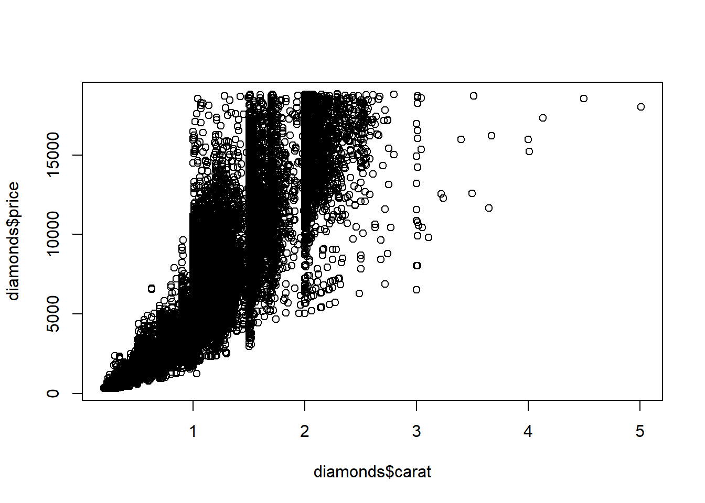
plot(diamonds$carat, log(diamonds$price))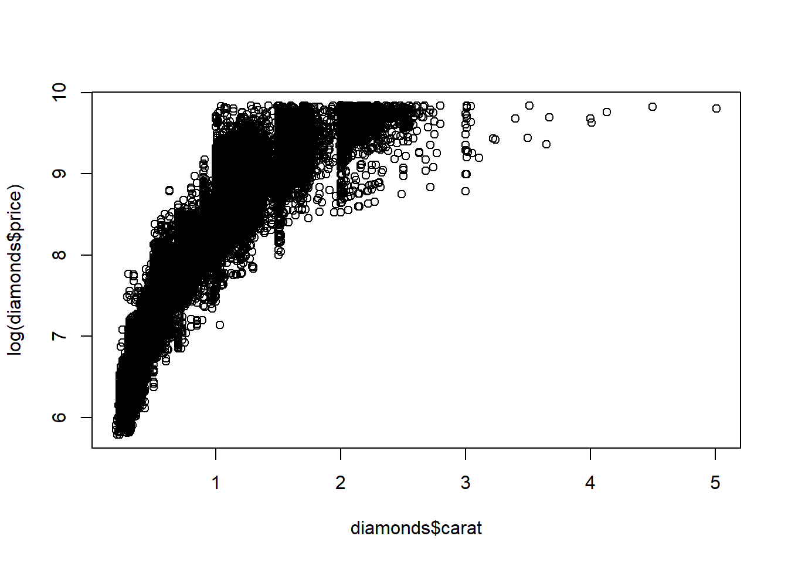
plot(diamonds$carat, sqrt(diamonds$price))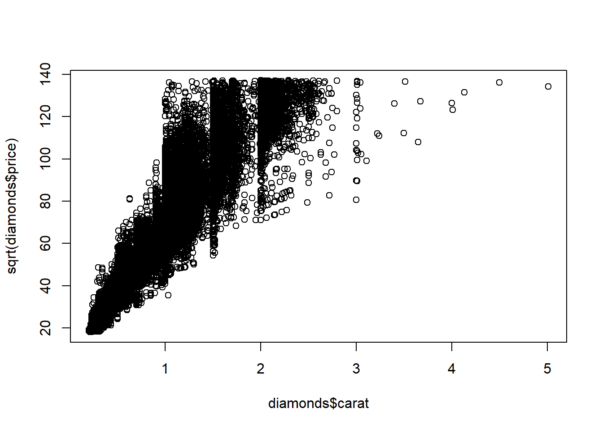
boxplot(diamonds$price~diamonds$cut)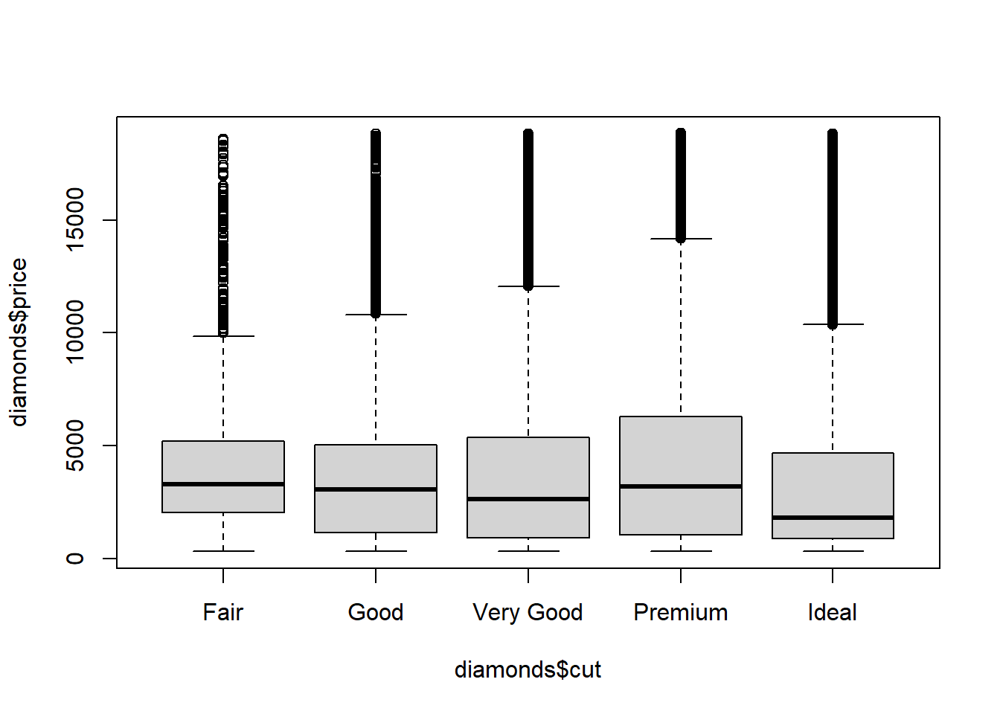
boxplot(diamonds$price~diamonds$clarity)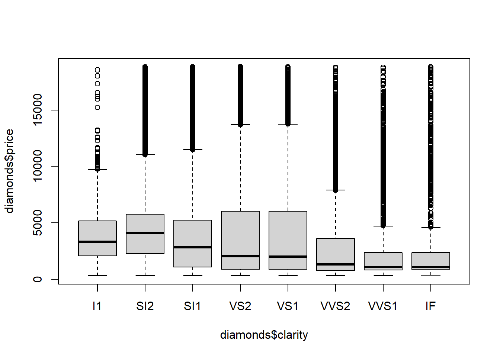
boxplot(diamonds$price~diamonds$color)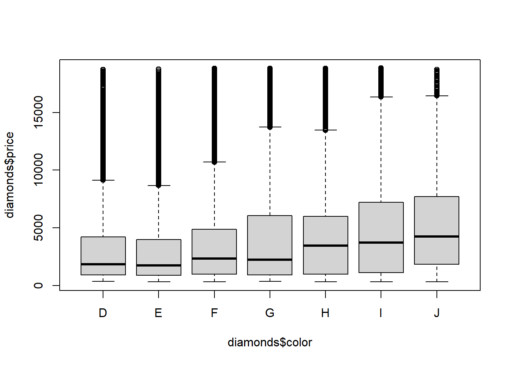
Note that if we fit a model in R with the ordinal-factor versions of the diamond quality variables R uses as many orthogonal polynomial contrasts as it can for each ordinal factor.
full.lm.sqrt <- lm(sqrt(price)~carat+cut+color+clarity, data = diamonds)
plot(full.lm.sqrt$fitted.values,full.lm.sqrt$residuals) 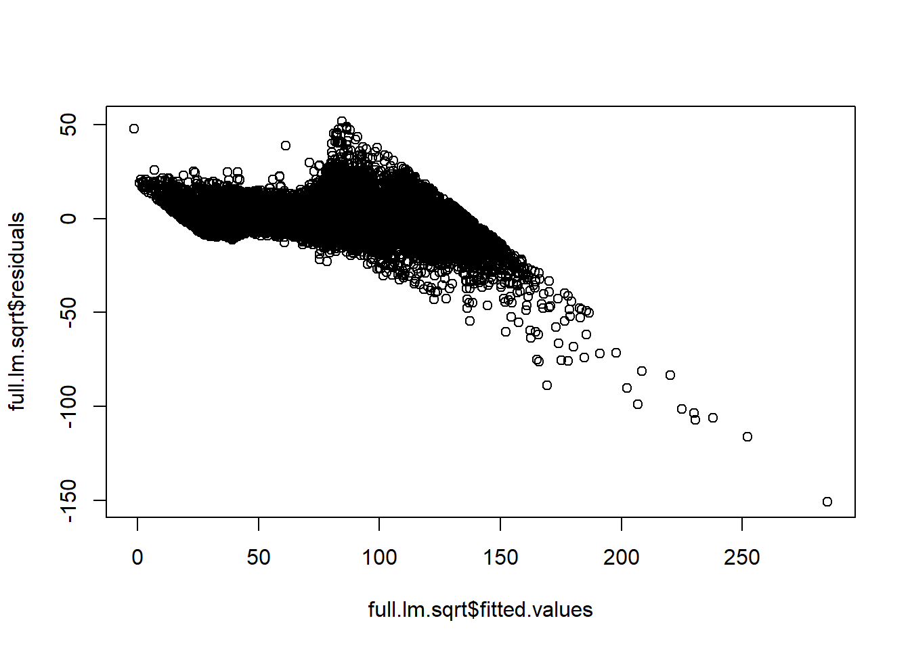
summary(full.lm.sqrt)##
## Call:
## lm(formula = sqrt(price) ~ carat + cut + color + clarity, data = diamonds)
##
## Residuals:
## Min 1Q Median 3Q Max
## -150.936 -3.296 -0.478 2.824 51.690
##
## Coefficients:
## Estimate Std. Error t value Pr(>|t|)
## (Intercept) 0.56869 0.07737 7.351 2.00e-13 ***
## carat 64.55472 0.06659 969.371 < 2e-16 ***
## cut.L 3.50254 0.11253 31.124 < 2e-16 ***
## cut.Q -1.69032 0.09912 -17.054 < 2e-16 ***
## cut.C 1.10438 0.08609 12.828 < 2e-16 ***
## cut^4 0.02937 0.06894 0.426 0.670
## color.L -13.98189 0.09802 -142.646 < 2e-16 ***
## color.Q -4.61348 0.08921 -51.712 < 2e-16 ***
## color.C -0.79061 0.08340 -9.480 < 2e-16 ***
## color^4 0.67221 0.07659 8.777 < 2e-16 ***
## color^5 -0.54516 0.07236 -7.533 5.02e-14 ***
## color^6 -0.09971 0.06579 -1.516 0.130
## clarity.L 26.37314 0.17062 154.572 < 2e-16 ***
## clarity.Q -12.45929 0.15953 -78.100 < 2e-16 ***
## clarity.C 6.50359 0.13658 47.619 < 2e-16 ***
## clarity^4 -2.37701 0.10924 -21.761 < 2e-16 ***
## clarity^5 1.60112 0.08915 17.960 < 2e-16 ***
## clarity^6 0.05858 0.07768 0.754 0.451
## clarity^7 0.49801 0.06853 7.267 3.72e-13 ***
## ---
## Signif. codes: 0 '***' 0.001 '**' 0.01 '*' 0.05 '.' 0.1 ' ' 1
##
## Residual standard error: 6.402 on 53921 degrees of freedom
## Multiple R-squared: 0.9501, Adjusted R-squared: 0.95
## F-statistic: 5.7e+04 on 18 and 53921 DF, p-value: < 2.2e-16AIC(full.lm.sqrt)## [1] 353387.4BIC(full.lm.sqrt)## [1] 353565.3A simpler model re-codes the ordinal factors as integers. This model is equivalent to the above model with only linear contrasts for each factor, hence the large difference in number of parameters.
full.lm.sqrt <- lm(sqrt(price)~carat+cut.num+color.num+clarity.num, data = diamonds)
plot(full.lm.sqrt$fitted.values,full.lm.sqrt$residuals) 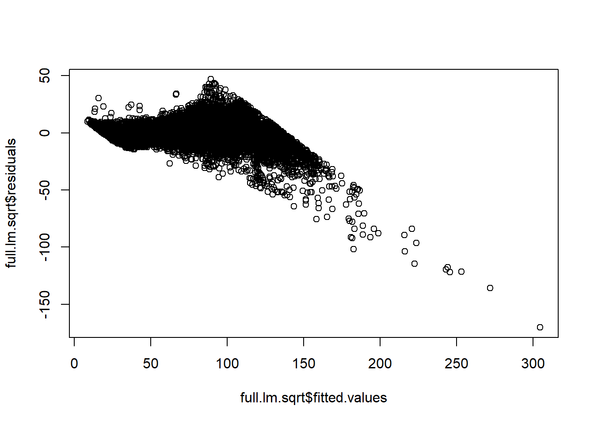
summary(full.lm.sqrt)##
## Call:
## lm(formula = sqrt(price) ~ carat + cut.num + color.num + clarity.num,
## data = diamonds)
##
## Residuals:
## Min 1Q Median 3Q Max
## -170.349 -3.303 -0.046 3.146 46.910
##
## Coefficients:
## Estimate Std. Error t value Pr(>|t|)
## (Intercept) -2.80669 0.15774 -17.79 <2e-16 ***
## carat 63.83681 0.07256 879.73 <2e-16 ***
## cut.num 0.79943 0.02781 28.75 <2e-16 ***
## color.num -2.34832 0.01888 -124.38 <2e-16 ***
## clarity.num 3.20315 0.02017 158.84 <2e-16 ***
## ---
## Signif. codes: 0 '***' 0.001 '**' 0.01 '*' 0.05 '.' 0.1 ' ' 1
##
## Residual standard error: 7.061 on 53935 degrees of freedom
## Multiple R-squared: 0.9392, Adjusted R-squared: 0.9392
## F-statistic: 2.084e+05 on 4 and 53935 DF, p-value: < 2.2e-16AIC(full.lm.sqrt)## [1] 363946.8BIC(full.lm.sqrt)## [1] 364000.1Our residuals have a pattern. We may be able to use “interactions” to obtain a better-fitting model due to multicollinearity—another term for correlation between covariates.
14.3 Multicollinearity
We see that diamonds of the worst cuts, colors, and clarities are also the largest diamonds on average. That makes sense. These diamonds are not worth much of anything unless they are large; the small diamonds of poor quality didn’t even make it to the market for diamonds. There is weak multicollinearity that probably is not enough to harm the interpretability of the model if all variables are included.
boxplot(diamonds$carat~diamonds$cut)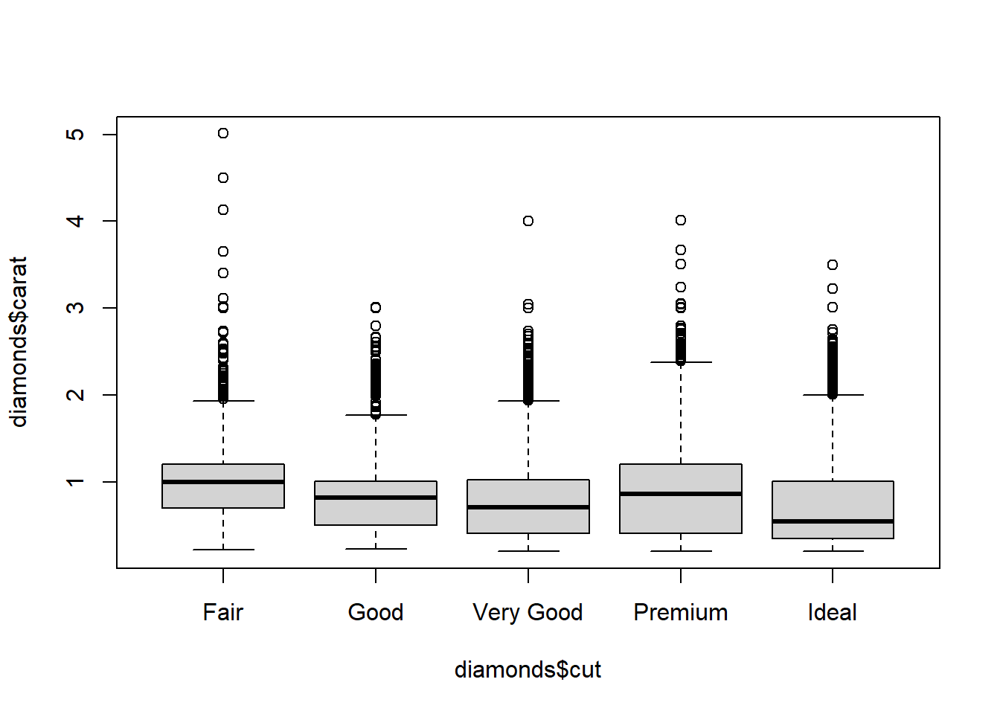
boxplot(diamonds$carat~diamonds$clarity)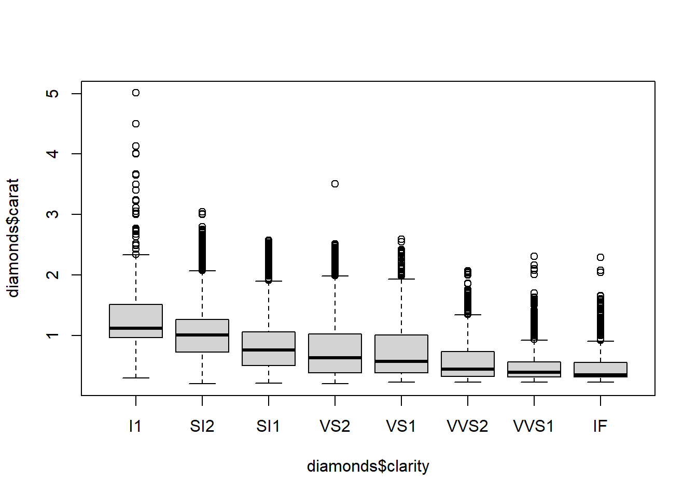
boxplot(diamonds$carat~diamonds$color)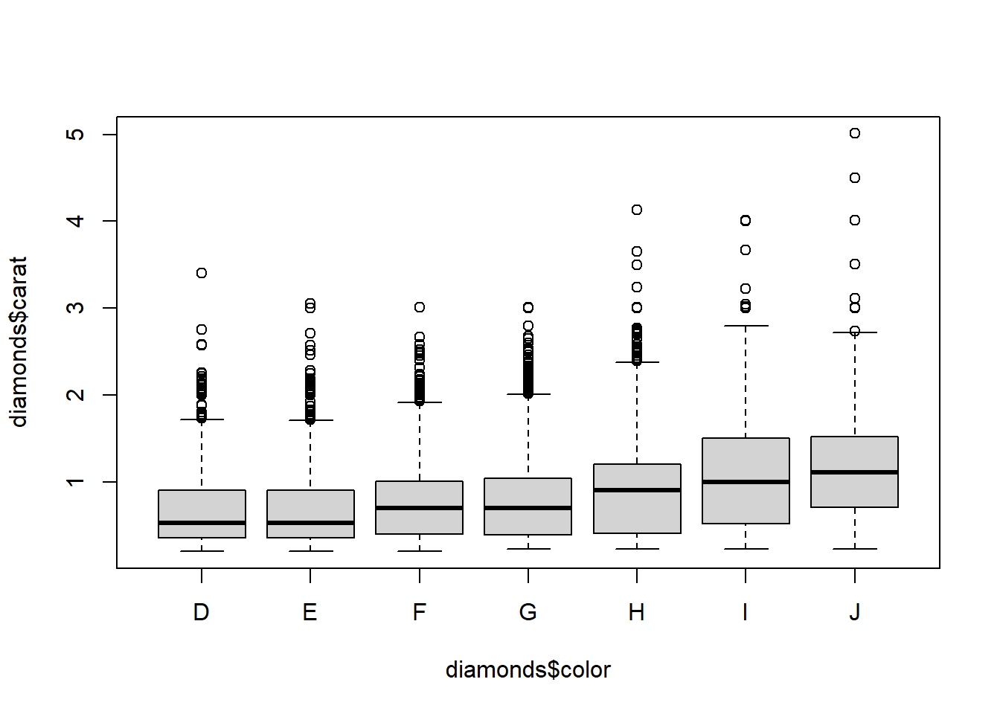
cor(diamonds$carat,as.numeric(diamonds$cut))## [1] -0.134967cor(diamonds$carat,as.numeric(diamonds$clarity))## [1] -0.3528406cor(diamonds$carat,as.numeric(diamonds$color))## [1] 0.291436814.4 Model with carat interactions
Including the carat interaction with cut, color, and clarity substantially improves the fit of the model as measured by \(R^2\) and \(R^2_{adj}\), the residual error/variance, and as evidenced by the residual vs predicted plot.
full.lm.sqrt <- lm(sqrt(price)~carat+cut.num+color.num+clarity.num + carat*clarity.num + carat*color.num +carat*cut.num, data = diamonds)
summary(full.lm.sqrt)##
## Call:
## lm(formula = sqrt(price) ~ carat + cut.num + color.num + clarity.num +
## carat * clarity.num + carat * color.num + carat * cut.num,
## data = diamonds)
##
## Residuals:
## Min 1Q Median 3Q Max
## -77.115 -2.174 -0.087 2.314 34.034
##
## Coefficients:
## Estimate Std. Error t value Pr(>|t|)
## (Intercept) 5.35572 0.19406 27.60 < 2e-16 ***
## carat 52.84947 0.20639 256.06 < 2e-16 ***
## cut.num -0.23567 0.03783 -6.23 4.71e-10 ***
## color.num 0.45156 0.02413 18.71 < 2e-16 ***
## clarity.num -0.69980 0.02430 -28.80 < 2e-16 ***
## carat:clarity.num 5.63633 0.02855 197.40 < 2e-16 ***
## carat:color.num -3.39270 0.02518 -134.74 < 2e-16 ***
## carat:cut.num 1.39771 0.03972 35.19 < 2e-16 ***
## ---
## Signif. codes: 0 '***' 0.001 '**' 0.01 '*' 0.05 '.' 0.1 ' ' 1
##
## Residual standard error: 4.771 on 53932 degrees of freedom
## Multiple R-squared: 0.9723, Adjusted R-squared: 0.9723
## F-statistic: 2.701e+05 on 7 and 53932 DF, p-value: < 2.2e-16AIC(full.lm.sqrt)## [1] 321649.3BIC(full.lm.sqrt)## [1] 321729.4qqnorm(full.lm.sqrt$residuals)
qqline(full.lm.sqrt$residuals)plot(full.lm.sqrt$fitted.values,full.lm.sqrt$residuals) 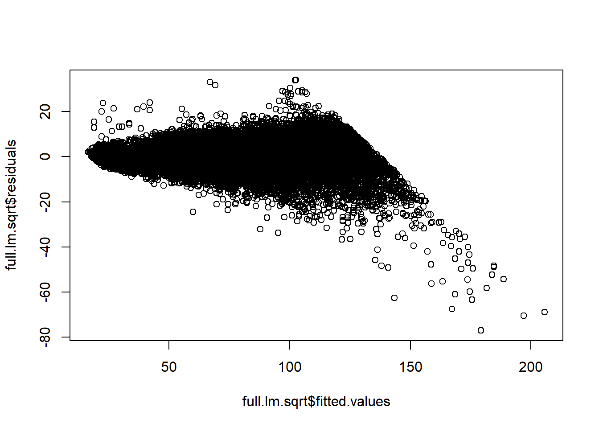
plot(diamonds$carat,full.lm.sqrt$residuals) 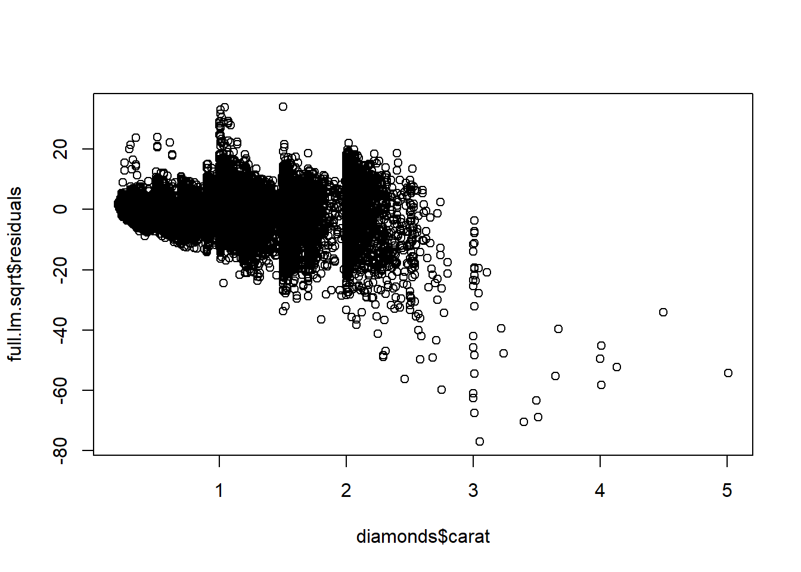
14.5 Interpreting the model
What about interpretability? We need to be specific about our interpretations, but the (simple) interactions model is certainly interpretable. For example, the first diamond in the data has carat 0.23, it is cut, color, and clarity levels 5, 2, and 2. The interpretation of the fitted betas is as follows, if we hold cut, color, and clarity constant, and increase carat by , say, 0.05, then we will increase sqrt(price) by \(3.216264 = 0.05*(52.84947 + 5*1.39771 -2*3.39270+2*5.63633)\). For another example, suppose if that diamond were cut level 4 instead of 5? Then, it’s sqrt(price) would change by \(-0.0858033 = 0.23567 - 0.23*1.39771\).
as.matrix(head(diamonds))[1,]## carat cut color clarity depth table
## "0.23" "Ideal" "E" "SI2" "61.5" "55"
## price x y z color.num cut.num
## "326" "3.95" "3.98" "2.43" "2" "5"
## clarity.num
## "2"full.lm.sqrt$fitted.values[1]## 1
## 18.47571X<- model.matrix(sqrt(price)~carat+cut.num+color.num+clarity.num + carat*clarity.num + carat*color.num +carat*cut.num, data = diamonds)
X[1,]## (Intercept) carat cut.num color.num
## 1.00 0.23 5.00 2.00
## clarity.num carat:clarity.num carat:color.num carat:cut.num
## 2.00 0.46 0.46 1.1514.6 Checking Constant Variance
As you may have noticed, the observed residuals ``fan out”; they increase in magnitude with the value of the predicted sqrt(price). What does this mean for our model/inferences? One consequence is that our tests/CIs for conditional means may not be valid in terms of their nominal \(\alpha\) Type 1 error/coverage probability for explanatory variable values with a large estimated mean sqrt(price) value. The variance of the fitted conditional mean \(\hat\mu_{Y|x} = x^{\top}\hat\beta\) is larger than estimated by \(MSEx^\top(X^\top X)^{-1}x\) for large values of \(x^{\top}\hat\beta\). The reason is that the variance of \(\epsilon_i\) seems to be \(\sigma^2 \times\text{carat}\) rather than \(\sigma^2\).
We will come back to this topic later to study what can be done about non-constant variance.
14.7 Normality
How bad is this? The residuals are ``normal” for about the middle 90-95 % of their distribution. There are some very extreme residuals; these are diamonds with prices poorly predicted by the model. We should be cautious when interpreting the model for these diamonds. We have likely missed some important information about their prices.
qqnorm(full.lm.sqrt$residuals/sd(full.lm.sqrt$residuals))
qqline(full.lm.sqrt$residuals/sd(full.lm.sqrt$residuals), probs = c(0.05, 0.95))
sorted <- sort(full.lm.sqrt$residuals)
points(-1.644854, -1.381829, col = 'red', pch = '*')
points(-1.96, -2.067442 , col = 'red', pch = '*')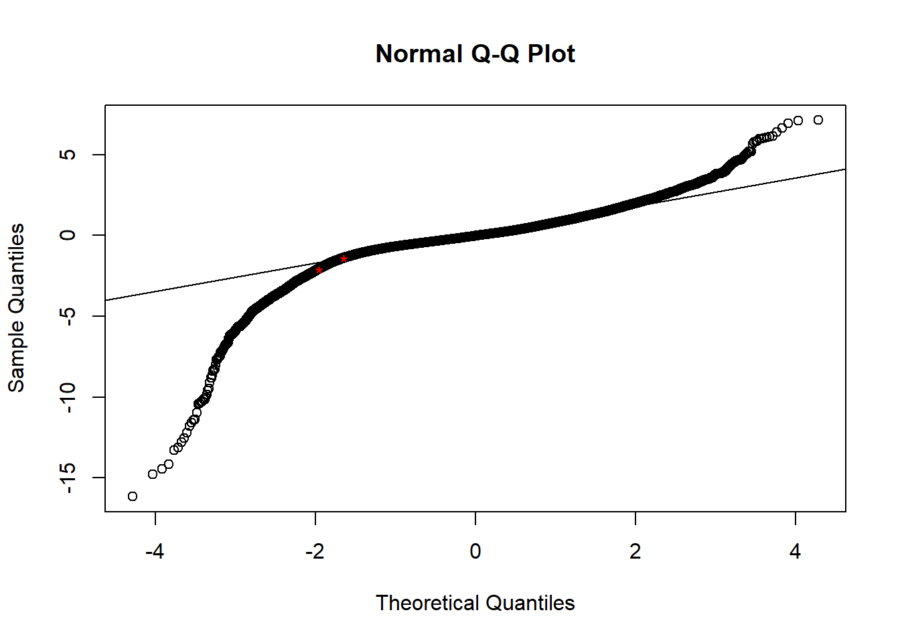
14.8 Addressing non-constant variance using WLS
Our increasing variance in residuals as a function of predicted price seems to have to do with carat. We can perform a weighted least squares estimation by weighting the observations by carat. The idea is that prices of diamonds with larger carat size have more variance, so we should downweight these observations compared to observations of smaller carat diamonds.
In R we can do this by using the lm() function with the wt option equal to 1/carat.
Using weights does not “correct” the non-constant variance; rather, we are incorporating the non-constant variance into the model.
get.weights <- lm(full.lm.sqrt$residuals^2 ~ full.lm.sqrt$fitted.values)
wls <- lm(sqrt(price)~carat+cut.num+color.num+clarity.num + carat*clarity.num + carat*color.num +carat*cut.num, weights = 1/diamonds$carat, data = diamonds)
summary(wls)##
## Call:
## lm(formula = sqrt(price) ~ carat + cut.num + color.num + clarity.num +
## carat * clarity.num + carat * color.num + carat * cut.num,
## data = diamonds, weights = 1/diamonds$carat)
##
## Weighted Residuals:
## Min 1Q Median 3Q Max
## -45.644 -2.700 -0.031 2.874 42.921
##
## Coefficients:
## Estimate Std. Error t value Pr(>|t|)
## (Intercept) 3.82491 0.13972 27.376 < 2e-16 ***
## carat 54.59492 0.19776 276.068 < 2e-16 ***
## cut.num -0.08956 0.02699 -3.318 0.000907 ***
## color.num 0.15453 0.01704 9.067 < 2e-16 ***
## clarity.num -0.32964 0.01717 -19.199 < 2e-16 ***
## carat:clarity.num 5.21950 0.02755 189.471 < 2e-16 ***
## carat:color.num -3.11506 0.02404 -129.588 < 2e-16 ***
## carat:cut.num 1.23565 0.03821 32.339 < 2e-16 ***
## ---
## Signif. codes: 0 '***' 0.001 '**' 0.01 '*' 0.05 '.' 0.1 ' ' 1
##
## Residual standard error: 4.583 on 53932 degrees of freedom
## Multiple R-squared: 0.9764, Adjusted R-squared: 0.9764
## F-statistic: 3.192e+05 on 7 and 53932 DF, p-value: < 2.2e-16AIC(wls)## [1] 296006.8BIC(wls)## [1] 296086.8qqnorm(wls$residuals)
qqline(wls$residuals)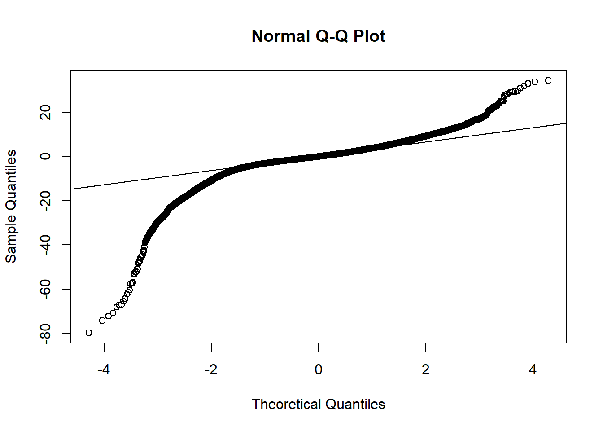
plot(wls$fitted.values,wls$residuals) plot(diamonds$carat,wls$residuals) 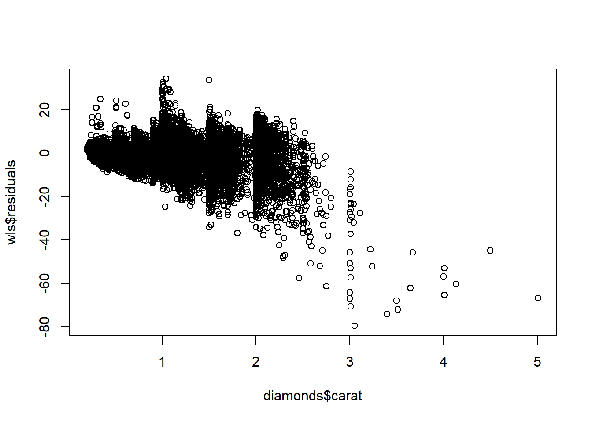
14.9 Inferences using WLS
Let’s compare confidence/prediction intervals using the WLS and OLS models. The WLS inferences are more “honest” than the OLS inferences because the OLS model’s assumption of constant variance is clearly violated. But, let’s see what practical difference it makes.
1. 95% CI for the carat beta
2. 95% CI for mean price for carat = 1.5, cut = 3, clarity = 5, color = 2. This is a fairly large diamond of good quality.
3. 95% Prediction interval for the same.
X <- model.matrix(sqrt(price)~carat+cut.num+color.num+clarity.num + carat*clarity.num + carat*color.num +carat*cut.num, data= diamonds)
Y <- sqrt(diamonds$price)
n <- nrow(X)
p <- ncol(X)
W <- (1/diamonds$carat)
### OLS inferences
XX.inv <- solve(t(X)%*%X)
beta.hat.ols <- XX.inv%*%t(X)%*%Y
beta.hat.ols## [,1]
## (Intercept) 5.3557161
## carat 52.8494746
## cut.num -0.2356664
## color.num 0.4515624
## clarity.num -0.6998048
## carat:clarity.num 5.6363319
## carat:color.num -3.3927023
## carat:cut.num 1.3977070MSE.ols <- (1/(n-p))*sum((Y - X%*%beta.hat.ols)^2)
MSE.ols## [1] 22.76062# CI for carat beta
c(beta.hat.ols[2] - qt(0.975, n-p)*sqrt(MSE.ols*XX.inv[2,2]), beta.hat.ols[2] + qt(0.975, n-p)*sqrt(MSE.ols*XX.inv[2,2]))## [1] 52.44495 53.25400# CI for mean price of that diamond
x <- matrix(c(1, 1.5, 3,2,5,1.5*5, 1.5*2, 1.5*3), 8,1)
c(t(x)%*%beta.hat.ols - qt(0.975, n-p)*sqrt(MSE.ols*t(x)%*%XX.inv%*%x), t(x)%*%beta.hat.ols + qt(0.975, n-p)*sqrt(MSE.ols*t(x)%*%XX.inv%*%x))## [1] 119.5424 119.8798# PI
c(t(x)%*%beta.hat.ols - qt(0.975, n-p)*sqrt(MSE.ols*(1+t(x)%*%XX.inv%*%x)), t(x)%*%beta.hat.ols + qt(0.975, n-p)*sqrt(MSE.ols*(1+t(x)%*%XX.inv%*%x)))## [1] 110.3587 129.0634### WLS inferences
XW <- matrix(0,p,n)
tX <- t(X)
for(j in 1:n){
Wj <- matrix(0,n,1)
Wj[j] <- W[j]
for(i in 1:p){
XW[i,j] <- tX[i,]%*%Wj
}
}
XWX.inv <- solve(XW%*%X)
beta.hat.wls <- XWX.inv%*%XW%*%Y
beta.hat.wls## [,1]
## (Intercept) 3.82491459
## carat 54.59491779
## cut.num -0.08955524
## color.num 0.15452811
## clarity.num -0.32964027
## carat:clarity.num 5.21950075
## carat:color.num -3.11506184
## carat:cut.num 1.23564947MSE.wls <- (1/(n-p))*sum(W*(Y - X%*%beta.hat.wls)^2)
MSE.wls## [1] 21.00181c(beta.hat.wls[2] - qt(0.975, n-p)*sqrt(MSE.wls*XWX.inv[2,2]), beta.hat.wls[2] + qt(0.975, n-p)*sqrt(MSE.wls*XWX.inv[2,2]))## carat carat
## 54.20731 54.98253c(t(x)%*%beta.hat.wls - qt(0.975, n-p)*sqrt(MSE.wls*t(x)%*%XWX.inv%*%x), t(x)%*%beta.hat.wls + qt(0.975, n-p)*sqrt(MSE.wls*t(x)%*%XWX.inv%*%x))## [1] 119.2983 119.6437c(t(x)%*%beta.hat.wls - qt(0.975, n-p)*sqrt(MSE.wls*(1+t(x)%*%XWX.inv%*%x)), t(x)%*%beta.hat.wls + qt(0.975, n-p)*sqrt(MSE.wls*(1+t(x)%*%XWX.inv%*%x)))## [1] 110.4870 128.4549c(t(x)%*%beta.hat.wls - qt(0.975, n-p)*sqrt(MSE.wls*(1.5+t(x)%*%XWX.inv%*%x)), t(x)%*%beta.hat.wls + qt(0.975, n-p)*sqrt(MSE.wls*(1.5+t(x)%*%XWX.inv%*%x)))## [1] 108.4686 130.473314.10 Using built-in functions in R for inference
Make sure to use the weights option in predict.lm for predicting a new response based on the WLS regression model.
confint(full.lm.sqrt)## 2.5 % 97.5 %
## (Intercept) 4.9753505 5.7360816
## carat 52.4449462 53.2540030
## cut.num -0.3098125 -0.1615203
## color.num 0.4042664 0.4988584
## clarity.num -0.7474246 -0.6521849
## carat:clarity.num 5.5803670 5.6922968
## carat:color.num -3.4420565 -3.3433480
## carat:cut.num 1.3198461 1.4755679confint(wls)## 2.5 % 97.5 %
## (Intercept) 3.5510712 4.09875801
## carat 54.2073087 54.98252686
## cut.num -0.1424549 -0.03665554
## color.num 0.1211232 0.18793297
## clarity.num -0.3632933 -0.29598725
## carat:clarity.num 5.1655068 5.27349466
## carat:color.num -3.1621770 -3.06794668
## carat:cut.num 1.1607589 1.31054002new.carat = 1.5
new.cut = 3
new.clarity = 5
new.color = 2
new.data <- data.frame(carat = new.carat, cut.num = new.cut, color.num = new.color, clarity.num = new.clarity)
predict.lm(wls, newdata = new.data, interval = 'confidence')## fit lwr upr
## 1 119.471 119.2983 119.6437predict.lm(wls, newdata = new.data, interval = 'prediction')## Warning in predict.lm(wls, newdata = new.data, interval = "prediction"): Assuming constant prediction variance even though model fit is weighted## fit lwr upr
## 1 119.471 110.487 128.4549predict.lm(wls, newdata = new.data, interval = 'prediction', weights = 1/1.5)## fit lwr upr
## 1 119.471 108.4686 130.4733predict.lm(full.lm.sqrt, newdata = new.data, interval = 'confidence')## fit lwr upr
## 1 119.7111 119.5424 119.8798predict.lm(full.lm.sqrt, newdata = new.data, interval = 'prediction')## fit lwr upr
## 1 119.7111 110.3587 129.063414.11 Leverage, outliers, and influence
Outlier are observations with very large residuals—the model is not good at predicting the prices of these diamonds. Large residuals may happen by chance, because the model is missing important covariate information, or because one or more assumptions are violated. Often, we consider removing observations with large residuals based on the rationale that if the model is not good at predicting those responses then those observations should not be modeled—a rationale that is, at least partially, flawed. Outlier observations are only troublesome if they have an outsized effect on the fit of the model, which may be measured by comparing \(\hat\beta\) with and without the observation in question, or comparing \(\hat Y\) or the \(SSE\). Observations that strongly affect the fit of the model have high leverage. Outliers with high leverage are influential points. It is only these influential points we need to worry about in terms of whether or not to include them in the model at all. On the other hand, outliers that are not influential are only important when it comes to interpreting the fit of the model at that particular observation, and not for interpreting the model in general.
14.11.1 Illustrations
First, some “cartoons” or “toy” examples. The following plots illustrate outliers, leverage, and influence using a simple linear regression on contrived data. The first plot shows a fit without any outliers. The second shows a fit with a high leverage point, that is not an outlier. The third show a pair of fitterd lines with and without a non-influential outlier (one without leverage). And, the fourth shows a plot of a pair of fitted lines with and without an influential point.
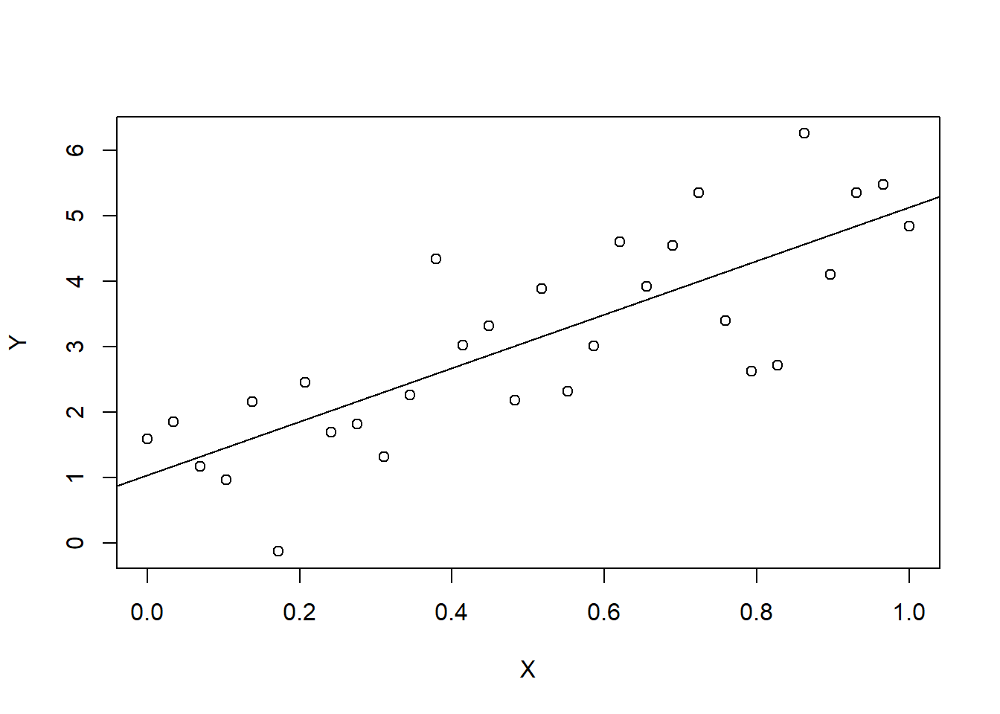
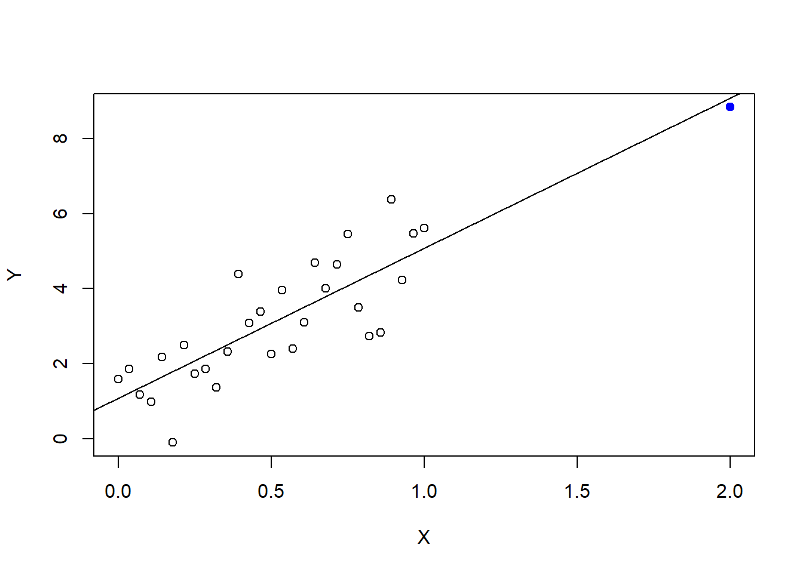
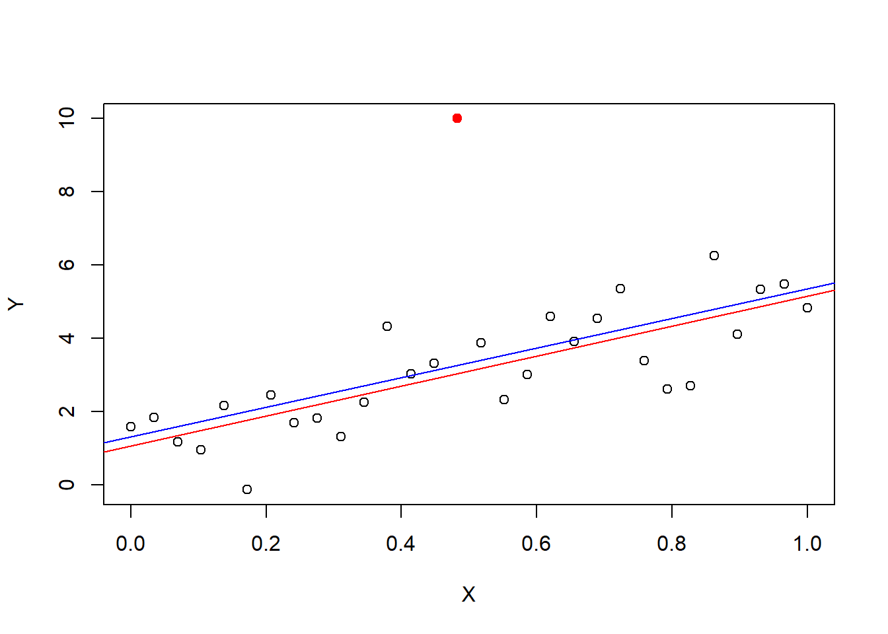
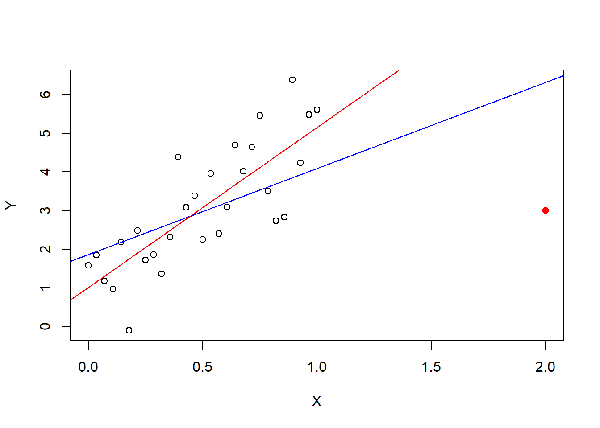
14.12 Numerical summaries of outliers, leverage, and influence
The “hat” matrix \(H = X(X^\top X)^{-1}X^\top\) determines high leverage points. To see this, note that the fitted responses are given by \(\hat Y = H Y\), which are linear combinations of all the responses. We can express \(\hat Y_i\)—the predicted price of the \(i^{th}\) diamond—as a linear combination of the price of the \(i^{th}\) diamond itself and the other \(n-1\) diamonds: \(\hat Y_i = h_{ii}Y_i + \sum_{i\ne j} h_{ij}Y_j\) where \(h_{ij}\) is the \(ij\) entry of \(H\). If we simply define leverage to be the degree to which an observed response determines its own prediction (or fitted value) then \(h_{ii}\)—the diagonal of \(H\)—defines leverage. Large values of leverage are \(2\) to \(3\) times \((p+1)/n\).
h.X <- hat(X)
h.X## [1] 0.09682659 0.08884843 0.08140573 0.07449847 0.06812665 0.06229028
## [7] 0.05698936 0.05222389 0.04799386 0.04429928 0.04114014 0.03851646
## [13] 0.03642821 0.03487542 0.03385807 0.03337617 0.03342971 0.03401870
## [19] 0.03514314 0.03680303 0.03899836 0.04172914 0.04499536 0.04879703
## [25] 0.05313415 0.05800671 0.06341472 0.06935818 0.07583708 0.47463768# hat(model.matrix(Y~X)) # same
which(h.X > (3*2 / 30)) # 3(k+1)/n## [1] 30which.max(h.X)## [1] 30# "by hand"
X.d <- cbind(rep(1,30),X)
hat.X <- X.d%*%solve(t(X.d)%*%X.d)%*%t(X.d) # n by n matrix
diag(hat.X)## [1] 0.09682659 0.08884843 0.08140573 0.07449847 0.06812665 0.06229028
## [7] 0.05698936 0.05222389 0.04799386 0.04429928 0.04114014 0.03851646
## [13] 0.03642821 0.03487542 0.03385807 0.03337617 0.03342971 0.03401870
## [19] 0.03514314 0.03680303 0.03899836 0.04172914 0.04499536 0.04879703
## [25] 0.05313415 0.05800671 0.06341472 0.06935818 0.07583708 0.47463768Outliers are defined by large residuals. In multiple linear regression there is more than one way to define residuals and studentized residuals. “Studentized” refers to normalizing residuals by the estimated standard deviation. Internally studentized residuals include each observation in the calculation of the estimated standard deviation whereas externally studentized residuals ignore the corresponding observation when computing the estimated standard deviation for normalization. Residuals between 2 and 3 are borderline outliers, while residuals above 3 are generally considered to be outliers.
plot(X, my.lm$residuals)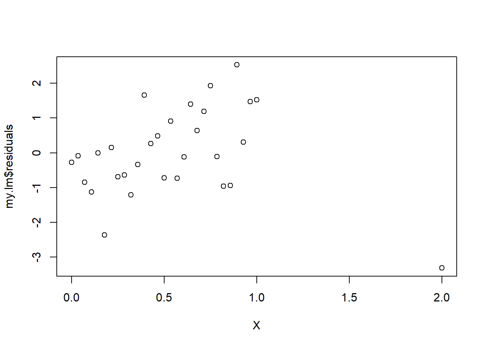
MSE <- sum(my.lm$residuals^2)/(30-2)
int.stud.resids <- my.lm$residuals / sqrt(MSE * (1-h.X))
plot(X, int.stud.resids)MSE.i <- rep(NA, 30)
for(i in 1:30){
MSE.i[i] <- sum(my.lm$residuals[-i]^2)/(30-2-1)
}
ext.stud.resids <- my.lm$residuals / sqrt(MSE.i * (1-h.X))
plot(X, ext.stud.resids)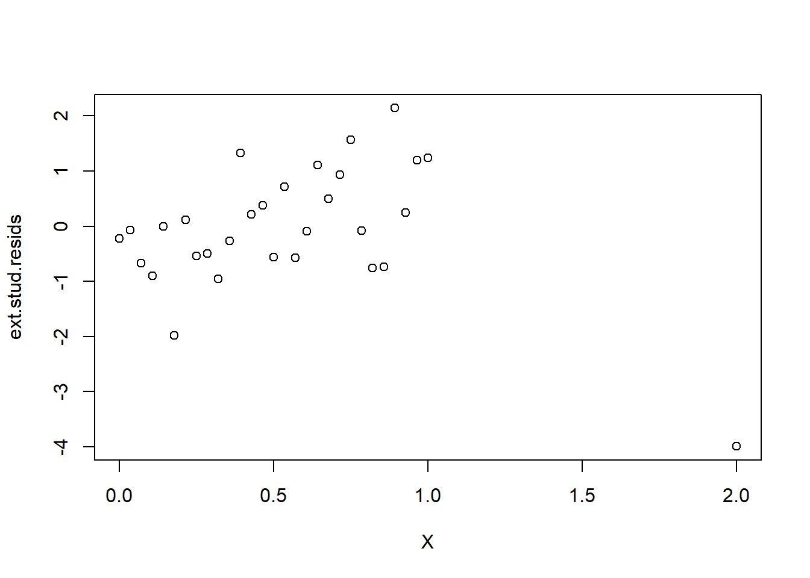
An observation’s influence can be defined by the degree to which is affects the model through \(\hat\beta\) or \(\hat Y\). Cook’s D and DfFits measure the fit of the model, which is related to residuals and fitted/predicted values, whereas DfBetas measures the change in the fitted coefficients with or without the given observation. There is considerable disagreement over what constitutes a “large” value of Cook’s distance. Some practitioners use the cutoff 1, which is supported by the following argument. The cook’s distance for a single observation is a random variable distributed approximately according to an \(F\) distribution with numerator and denominator degrees of freedom \(p+1\) and \(n\). If we take the median of this distribution to be the cutoff for large Cook’s distance, then the cutoff is approximately \(\frac{n}{3n-2}\frac{3(p+1)-2}{p}\approx 1\) if \(n\) is large and \(p\) is moderate, but it can be substantially different from 1 otherwise. The Cook’s distance plotting function in the olsrr package uses the cutoff 4/n, which, of course, is quite different. DfFits greater than \(2\sqrt{p/n}\) and DfBetas greater than \(2/\sqrt{n}\) are generally considered to be large and indicate outsized influence.
# base r functions
cd <- cooks.distance(my.lm)
which(cd > (30/(3*30-2))*(3*2-2)/(2))## 30
## 30dfb <- dfbetas(my.lm)
which(dfb > 2/sqrt(30))## [1] 30dff <- dffits(my.lm)
which(dff > 2*sqrt(2/30))## 26
## 26library(olsrr)## Warning: package 'olsrr' was built under R version 4.2.2##
## Attaching package: 'olsrr'## The following object is masked from 'package:datasets':
##
## riversols_plot_cooksd_bar(my.lm) # lol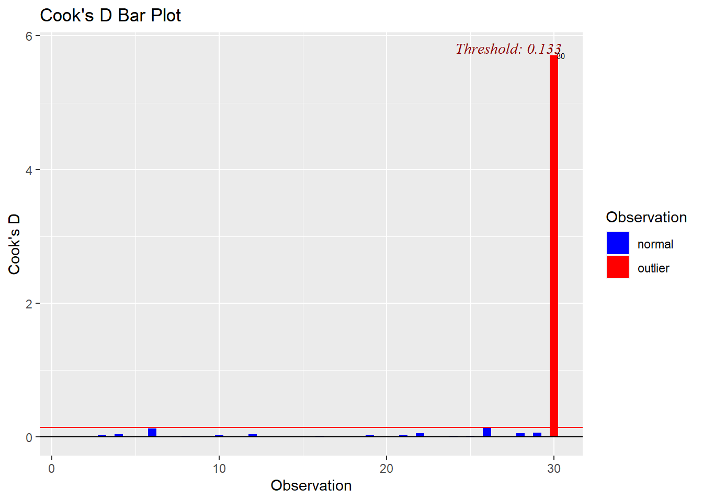
ols_plot_dfbetas(my.lm)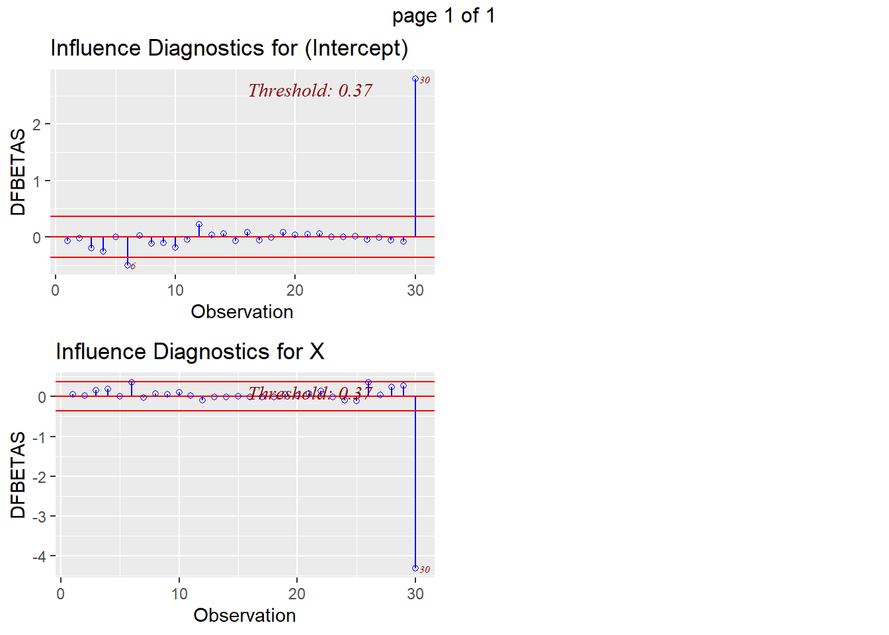
ols_plot_dffits(my.lm)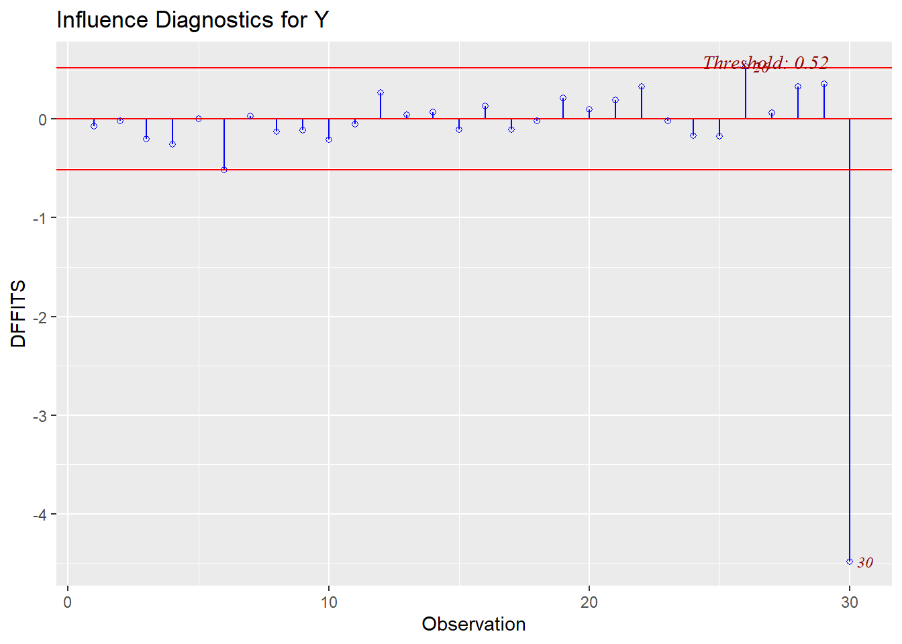
14.13 Leverage, Diamonds model
wls <- lm(sqrt(price)~carat+cut.num+color.num+clarity.num + carat*clarity.num + carat*color.num +carat*cut.num, weights = 1/diamonds$carat, data = diamonds)
MSE.wls <- sum((wls$residuals)^2)/(nrow(diamonds)-8)
leverages.lm <- lm.influence(wls)$hat
# k + 1 = 8 fitted regression coefficients
# n = 53940
3 * 8/53940## [1] 0.0004449388sum(leverages.lm > 0.00045)## [1] 1248sum(leverages.lm > 0.00045) / 53940## [1] 0.02313682plot(wls$fitted.values[leverages.lm < 0.00045], wls$residuals[leverages.lm < 0.00045])
points(wls$fitted.values[leverages.lm > 0.00045], wls$residuals[leverages.lm > 0.00045], col = 'blue')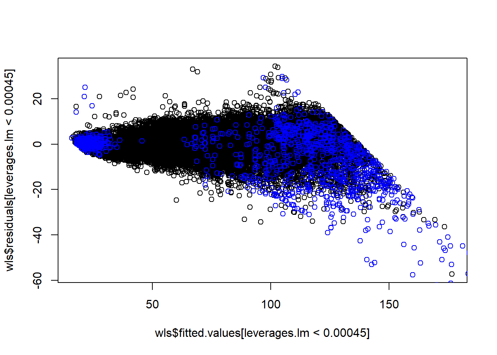
14.13.1 Outliers, diamonds model
int.stud.resids <- wls$residuals / sqrt(MSE.wls * (1-leverages.lm)*(diamonds$carat))
plot(wls$fitted.values, int.stud.resids)
points(wls$fitted.values[abs(int.stud.resids)>3], int.stud.resids[abs(int.stud.resids)>3], col = 'blue')MSE.i <- rep(NA, 53940)
for(i in 1:53940){
MSE.i[i] <- sum(wls$residuals[-i]^2)/(53940-8-1)
}
ext.stud.resids <- wls$residuals / sqrt(MSE.i * (1-leverages.lm)*(diamonds$carat))
plot(wls$fitted.values, ext.stud.resids)
points(wls$fitted.values[abs(ext.stud.resids)>3], ext.stud.resids[abs(ext.stud.resids)>3], col = 'blue')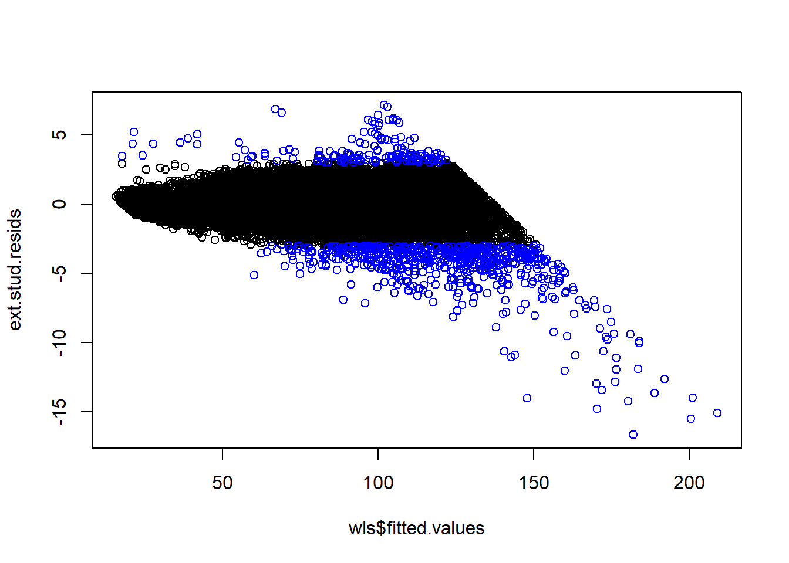
14.13.2 plotting outliers with leverage
plot(wls$fitted.values, ext.stud.resids)
points(wls$fitted.values[abs(ext.stud.resids)>3 & leverages.lm > 0.00045], ext.stud.resids[abs(ext.stud.resids)>3 & leverages.lm > 0.00045], col = 'red')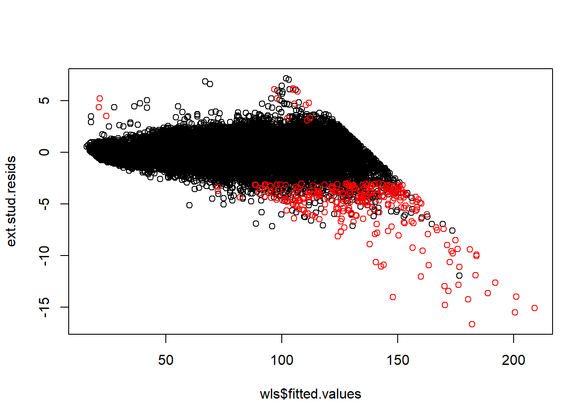
length(wls$fitted.values[abs(ext.stud.resids)>3 & leverages.lm > 0.00045])## [1] 179length(wls$fitted.values[abs(ext.stud.resids)>3 & leverages.lm > 0.00045])/53940## [1] 0.00331850214.13.3 Cook’s distance, DF betas, DF fits
n<-53940
p <- length(wls$coefficients)
# base r functions
cd <- cooks.distance(wls, weights = 1/diamonds$carat)
sum(cd > (((n)/(3*n-2)) * ((3*p-2)/(p))) )## [1] 0dfb <- dfbetas(wls, weights = 1/diamonds$carat)
sum(abs(dfb) > 2*sqrt(1/n))## [1] 25530dff <- dffits(wls)
sum(abs(dff) > 2*sqrt(p/n))## [1] 3201my.dff <- ext.stud.resids*sqrt(leverages.lm/(1-leverages.lm))
sum(my.dff > 2*sqrt(p/n))## [1] 1131plot(wls$fitted.values, ext.stud.resids)
points(wls$fitted.values[cd > (((n)/(3*n-2)) * ((3*p-2)/(p)))], ext.stud.resids[cd > (((n)/(3*n-2)) * ((3*p-2)/(p)))], col = 'red')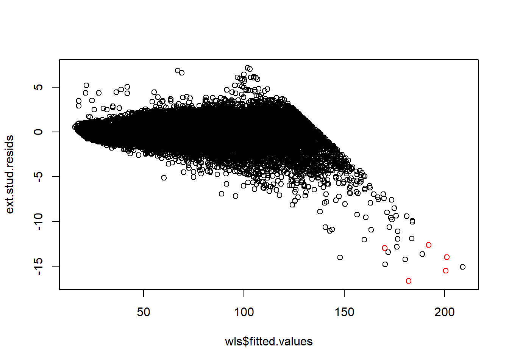
plot(wls$fitted.values, ext.stud.resids)
points(wls$fitted.values[abs(dfb) > 2*sqrt(1/n)], ext.stud.resids[abs(dfb) > 2*sqrt(1/n)], col = 'red')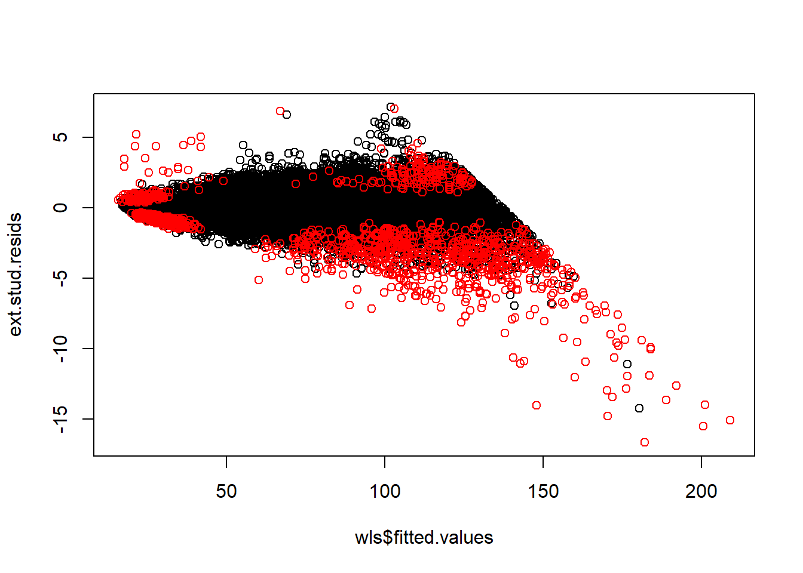
plot(wls$fitted.values, ext.stud.resids)
points(wls$fitted.values[abs(dff) > 2*sqrt(p/n)], ext.stud.resids[abs(dff) > 2*sqrt(p/n)], col = 'red')plot(wls$fitted.values, ext.stud.resids)
points(wls$fitted.values[abs(my.dff) > 2*sqrt(p/n)], ext.stud.resids[abs(my.dff) > 2*sqrt(p/n)], col = 'red')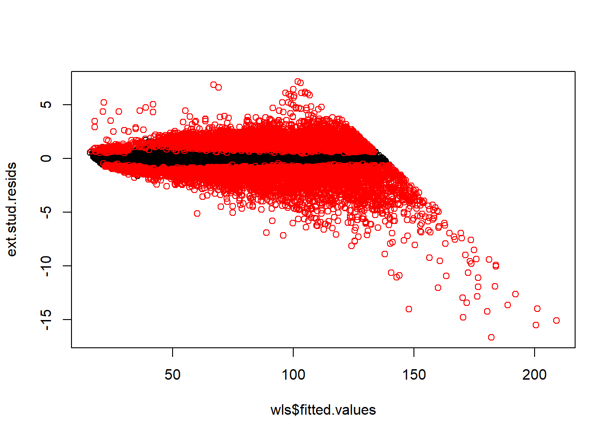
14.13.4 Model fit without high leverage outliers
summary(wls)##
## Call:
## lm(formula = sqrt(price) ~ carat + cut.num + color.num + clarity.num +
## carat * clarity.num + carat * color.num + carat * cut.num,
## data = diamonds, weights = 1/diamonds$carat)
##
## Weighted Residuals:
## Min 1Q Median 3Q Max
## -45.644 -2.700 -0.031 2.874 42.921
##
## Coefficients:
## Estimate Std. Error t value Pr(>|t|)
## (Intercept) 3.82491 0.13972 27.376 < 2e-16 ***
## carat 54.59492 0.19776 276.068 < 2e-16 ***
## cut.num -0.08956 0.02699 -3.318 0.000907 ***
## color.num 0.15453 0.01704 9.067 < 2e-16 ***
## clarity.num -0.32964 0.01717 -19.199 < 2e-16 ***
## carat:clarity.num 5.21950 0.02755 189.471 < 2e-16 ***
## carat:color.num -3.11506 0.02404 -129.588 < 2e-16 ***
## carat:cut.num 1.23565 0.03821 32.339 < 2e-16 ***
## ---
## Signif. codes: 0 '***' 0.001 '**' 0.01 '*' 0.05 '.' 0.1 ' ' 1
##
## Residual standard error: 4.583 on 53932 degrees of freedom
## Multiple R-squared: 0.9764, Adjusted R-squared: 0.9764
## F-statistic: 3.192e+05 on 7 and 53932 DF, p-value: < 2.2e-16diamonds2 <- diamonds[!(abs(ext.stud.resids)>3 & leverages.lm > 0.00045),]
wls2 <- lm(sqrt(price)~carat+cut.num+color.num+clarity.num + carat*clarity.num + carat*color.num +carat*cut.num, weights = 1/diamonds2$carat, data = diamonds2)
summary(wls2)##
## Call:
## lm(formula = sqrt(price) ~ carat + cut.num + color.num + clarity.num +
## carat * clarity.num + carat * color.num + carat * cut.num,
## data = diamonds2, weights = 1/diamonds2$carat)
##
## Weighted Residuals:
## Min 1Q Median 3Q Max
## -33.735 -2.691 -0.061 2.795 38.298
##
## Coefficients:
## Estimate Std. Error t value Pr(>|t|)
## (Intercept) 3.066818 0.136417 22.481 < 2e-16 ***
## carat 55.782304 0.195343 285.561 < 2e-16 ***
## cut.num 0.009513 0.026228 0.363 0.717
## color.num 0.122563 0.016485 7.435 1.06e-13 ***
## clarity.num -0.253231 0.016751 -15.118 < 2e-16 ***
## carat:clarity.num 5.099607 0.027196 187.511 < 2e-16 ***
## carat:color.num -3.067312 0.023386 -131.159 < 2e-16 ***
## carat:cut.num 1.080849 0.037405 28.896 < 2e-16 ***
## ---
## Signif. codes: 0 '***' 0.001 '**' 0.01 '*' 0.05 '.' 0.1 ' ' 1
##
## Residual standard error: 4.403 on 53753 degrees of freedom
## Multiple R-squared: 0.9781, Adjusted R-squared: 0.9781
## F-statistic: 3.437e+05 on 7 and 53753 DF, p-value: < 2.2e-16confint(wls)## 2.5 % 97.5 %
## (Intercept) 3.5510712 4.09875801
## carat 54.2073087 54.98252686
## cut.num -0.1424549 -0.03665554
## color.num 0.1211232 0.18793297
## clarity.num -0.3632933 -0.29598725
## carat:clarity.num 5.1655068 5.27349466
## carat:color.num -3.1621770 -3.06794668
## carat:cut.num 1.1607589 1.31054002new.carat = 1.5
new.cut = 3
new.clarity = 5
new.color = 2
new.data <- data.frame(carat = new.carat, cut.num = new.cut, color.num = new.color, clarity.num = new.clarity)
predict.lm(wls, newdata = new.data, interval = 'confidence')## fit lwr upr
## 1 119.471 119.2983 119.6437predict.lm(wls, newdata = new.data, interval = 'prediction', weights = 1.5)## fit lwr upr
## 1 119.471 112.1349 126.807confint(wls2)## 2.5 % 97.5 %
## (Intercept) 2.79943898 3.33419658
## carat 55.39943076 56.16517756
## cut.num -0.04189338 0.06092028
## color.num 0.09025309 0.15487319
## clarity.num -0.28606191 -0.22039954
## carat:clarity.num 5.04630203 5.15291189
## carat:color.num -3.11314867 -3.02147445
## carat:cut.num 1.00753474 1.15416254new.carat = 1.5
new.cut = 3
new.clarity = 5
new.color = 2
new.data <- data.frame(carat = new.carat, cut.num = new.cut, color.num = new.color, clarity.num = new.clarity)
predict.lm(wls2, newdata = new.data, interval = 'confidence')## fit lwr upr
## 1 119.6567 119.4893 119.8242predict.lm(wls2, newdata = new.data, interval = 'prediction', weights = 1.5)## fit lwr upr
## 1 119.6567 112.6083 126.705114.14 Dealing with highly influential data points
- Do not simply delete and ignore influential data points.
- Perform analyses both with and without the subset of points you identify as unusually influential.
- Recommend further analysis be done to understand why some points are not well-explained by the model.
- Are there data-entry mistakes?
- Are there important explanatory variables missing from the model?
- Are these all “exceptional” cases?
- Are there data-entry mistakes?
Question: Suppose this model is being used as an automatic diamond pricing algorithm by a diamond seller. A new diamond is “fed” into the model, and out comes a suggested price. What should be the impact of the above influence analysis on this pricing algorithm?